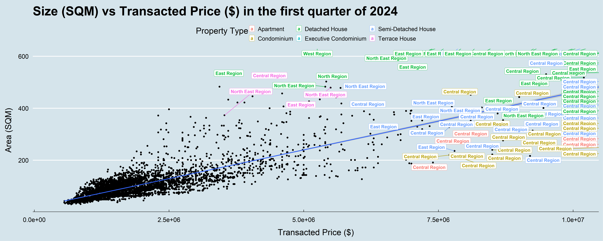

pacman::p_load(ggrepel, patchwork,
ggthemes, hrbrthemes,
tidyverse, ggridges, ggdist)Project 1
1. Overview
1.1 The task
Assuming the role of a graphical editor of a median company, the purpose of this data visualization exercise is to prepare minimum two and maximum three data visualizations to reveal interesting insights on the private residential market and sub-markets of Singapore for the 1st quarter of 2024 and prior periods.
1.2 The data
For this exercise and to accomplish the task, transaction data of REALIS will be used, which provides comprehensive and up-to-date statistics on the property market in Singapore.
A complete set of the private residential property transaction data from 1st January 2023 to 31st March 2024
2. Loading the needed libraries and data preparation
2.1 Loading the packages
For this Take-home exercise 1, I am planning to use some of the libraries below:
tidyverse: The tidyverse is an opinionated collection of R packages designed for data science.
patchwork: a package to make it simple to combine separate ggplots into the same graphic
ggrepel: a package to provide geoms for ggplot2 to repel overlapping text labels
ggthemes: a package to provide some extra themes, geoms, and scales for ‘ggplot2’.
ggridges: a package for Ridgeline plots, which are partially overlapping line plots that create the impression of a mountain range.
ggdist: an R package that provides a flexible set of ggplot2 geoms and stats designed especially for visualizing distributions and uncertainty which will assist with ggridges package
The Code:
2.2 Importing data and preparation
Since the data is a list of csv files containing quarterly data from the first quarter of 2023 to the first quarter of 2024, for the purpose of the study I will be creating and using both the full data set (Realis) and a smaller data set containing only data for the first quarter of 2024 (first_quarter_2024) from ResidentialTransaction20240414220633.csv file
The Code:
first_quarter_2024 <- read_csv("data/ResidentialTransaction20240414220633.csv")
list_of_files <- list.files(path = "data",
recursive = TRUE,
pattern = "\\.csv$",
full.names = TRUE)
Realis <- read_csv(list_of_files)3. Data overview and data wrangling
3.1 Data overview
The Code:
glimpse(Realis)Rows: 26,806
Columns: 21
$ `Project Name` <chr> "THE REEF AT KING'S DOCK", "URBAN TREASU…
$ `Transacted Price ($)` <dbl> 2317000, 1823500, 1421112, 1258112, 1280…
$ `Area (SQFT)` <dbl> 882.65, 882.65, 1076.40, 1033.34, 871.88…
$ `Unit Price ($ PSF)` <dbl> 2625, 2066, 1320, 1218, 1468, 1767, 1095…
$ `Sale Date` <chr> "01 Jan 2023", "02 Jan 2023", "02 Jan 20…
$ Address <chr> "12 HARBOURFRONT AVENUE #05-32", "205 JA…
$ `Type of Sale` <chr> "New Sale", "New Sale", "New Sale", "New…
$ `Type of Area` <chr> "Strata", "Strata", "Strata", "Strata", …
$ `Area (SQM)` <dbl> 82.0, 82.0, 100.0, 96.0, 81.0, 308.7, 42…
$ `Unit Price ($ PSM)` <dbl> 28256, 22238, 14211, 13105, 15802, 19015…
$ `Nett Price($)` <chr> "-", "-", "-", "-", "-", "-", "-", "-", …
$ `Property Type` <chr> "Condominium", "Condominium", "Executive…
$ `Number of Units` <dbl> 1, 1, 1, 1, 1, 1, 1, 1, 1, 1, 1, 1, 1, 1…
$ Tenure <chr> "99 yrs from 12/01/2021", "Freehold", "9…
$ `Completion Date` <chr> "Uncompleted", "Uncompleted", "Uncomplet…
$ `Purchaser Address Indicator` <chr> "HDB", "Private", "HDB", "HDB", "HDB", "…
$ `Postal Code` <chr> "097996", "419535", "269343", "269294", …
$ `Postal District` <chr> "04", "14", "27", "27", "28", "19", "10"…
$ `Postal Sector` <chr> "09", "41", "26", "26", "79", "54", "27"…
$ `Planning Region` <chr> "Central Region", "East Region", "North …
$ `Planning Area` <chr> "Bukit Merah", "Bedok", "Yishun", "Yishu…head(Realis)# A tibble: 6 × 21
`Project Name` `Transacted Price ($)` `Area (SQFT)` `Unit Price ($ PSF)`
<chr> <dbl> <dbl> <dbl>
1 THE REEF AT KING'S … 2317000 883. 2625
2 URBAN TREASURES 1823500 883. 2066
3 NORTH GAIA 1421112 1076. 1320
4 NORTH GAIA 1258112 1033. 1218
5 PARC BOTANNIA 1280000 872. 1468
6 NANYANG PARK 5870000 3323. 1767
# ℹ 17 more variables: `Sale Date` <chr>, Address <chr>, `Type of Sale` <chr>,
# `Type of Area` <chr>, `Area (SQM)` <dbl>, `Unit Price ($ PSM)` <dbl>,
# `Nett Price($)` <chr>, `Property Type` <chr>, `Number of Units` <dbl>,
# Tenure <chr>, `Completion Date` <chr>, `Purchaser Address Indicator` <chr>,
# `Postal Code` <chr>, `Postal District` <chr>, `Postal Sector` <chr>,
# `Planning Region` <chr>, `Planning Area` <chr>summary(Realis) Project Name Transacted Price ($) Area (SQFT) Unit Price ($ PSF)
Length:26806 Min. : 440000 Min. : 322.9 Min. : 138
Class :character 1st Qu.: 1280000 1st Qu.: 721.2 1st Qu.:1384
Mode :character Median : 1660000 Median : 990.3 Median :1762
Mean : 2143286 Mean : 1191.6 Mean :1852
3rd Qu.: 2320000 3rd Qu.: 1302.4 3rd Qu.:2260
Max. :392180000 Max. :144883.4 Max. :5756
Sale Date Address Type of Sale Type of Area
Length:26806 Length:26806 Length:26806 Length:26806
Class :character Class :character Class :character Class :character
Mode :character Mode :character Mode :character Mode :character
Area (SQM) Unit Price ($ PSM) Nett Price($) Property Type
Min. : 30.0 Min. : 1484 Length:26806 Length:26806
1st Qu.: 67.0 1st Qu.:14893 Class :character Class :character
Median : 92.0 Median :18966 Mode :character Mode :character
Mean : 110.7 Mean :19930
3rd Qu.: 121.0 3rd Qu.:24327
Max. :13460.0 Max. :61962
Number of Units Tenure Completion Date
Min. : 1.000 Length:26806 Length:26806
1st Qu.: 1.000 Class :character Class :character
Median : 1.000 Mode :character Mode :character
Mean : 1.005
3rd Qu.: 1.000
Max. :60.000
Purchaser Address Indicator Postal Code Postal District
Length:26806 Length:26806 Length:26806
Class :character Class :character Class :character
Mode :character Mode :character Mode :character
Postal Sector Planning Region Planning Area
Length:26806 Length:26806 Length:26806
Class :character Class :character Class :character
Mode :character Mode :character Mode :character
colSums(is.na(Realis)) Project Name Transacted Price ($)
0 0
Area (SQFT) Unit Price ($ PSF)
0 0
Sale Date Address
0 0
Type of Sale Type of Area
0 0
Area (SQM) Unit Price ($ PSM)
0 0
Nett Price($) Property Type
0 0
Number of Units Tenure
0 0
Completion Date Purchaser Address Indicator
0 0
Postal Code Postal District
0 0
Postal Sector Planning Region
0 0
Planning Area
0 A quick look at the data shown that there are 21 different columns, there are categorical variables that could be of interest such as Project Name, Property Type, Planning Region, Planning Area as well as continuous variables such as Transacted Price ($), Area (SQFT), Area (SQM), Unit Price ($ PSF), Unit Price ($ PSM), Number of Units.
There is also no missing data which is good and mean that we do not have to perform data wrangling for missing data.
For the purpose of this study, I would be focusing on these variable below:
Property Type, Planning Region, Transacted Price ($), Area (SQM), Unit Price ($ PSM), Sale Date
3.2 Data wrangling
Interestingly, Sale Date is supposed to be a kind of continuous variable or discrete variable; however, it is in ‘character’ type instead of ‘datetime’ or rather it is just in ‘string’, even though, the format seems correct. In addition, I also want to use a sort of monthly data visualization and the time seems to be in Date format.
Therefore some data transformation would need to be performed to create 2 new column called Sale Date asDate which is properly in Datetime format, and Sale Month, which show the month Sale happened instead of date.
To do this I would be using parse_date_time part of the lubridate in tidyverse package to correctly pasring the ‘string’ into datetime format then use as.Date to finally turn it into proper ‘datetime’, this would also create the Sale Date asDate column.
After above steps, I will be using format to create the Sale Month colum
The Code:
Realis <- Realis %>%
mutate(`Sale Date asDate` = as.Date((parse_date_time(`Sale Date`,
orders = c("%d %b %Y")))))
Realis <- Realis %>%
mutate(`Sale Month` = format(as.Date((parse_date_time(`Sale Date`,
orders = c("%d %b %Y")))), "%b %Y"))
first_quarter_2024 <- first_quarter_2024 %>%
mutate(`Sale Date asDate` = as.Date((parse_date_time(`Sale Date`,
orders = c("%d %b %Y")))))
first_quarter_2024 <- first_quarter_2024 %>%
mutate(`Sale Month` = format(as.Date((parse_date_time(`Sale Date`,
orders = c("%d %b %Y")))), "%b %Y"))4. Exploratory Data Analysis
As mentioned in the date importing and preparation, for the purpose of this study, I have prepare 2 separate data set for the full period from 2023 to first quarter of 2024 and just first quarter of 2024 called Realis and first_quarter_2024
The reason for this is I want to do Exploratory Data Analysis for both only the first quarter of 2024 data as well as an overall time series for the full data set which would be the 2 main data visualizations for the purpose of this study. There would be another sub data visualization which would be mentioned later
4.1 Data visualization for the first quarter of 2024
4.1.1 Main part
This part of the first quarter of 2024 data visualization contain 3 plots:
On the left is the bar plot counting the number of sales breaking down by different
Planning RegionOn the right is a ridgeline plot showing the
Unit Price ($ PSM)distribution breakdown by 4 quartiles by differentPlanning RegionBottom plot is box plot showing a further breakdown from the ridgeline plot going into different
Property Type

plot1 <-ggplot(data = first_quarter_2024, aes(x = `Planning Region`)) +
geom_bar(color = "grey10", aes(fill = `Property Type`)) +
ggtitle("Sales by Property Type by Planning Region") +
theme_economist() +
theme(axis.text=element_text(size = 20),
axis.title = element_text(size = 25),
title = element_text(size = 25, margin = margin(b = 15)),
axis.title.y = element_text(margin = margin(r = 15)),
axis.title.x = element_text(margin = margin(t = 15)))
plot2 <- ggplot(data = first_quarter_2024, aes(x = `Planning Region`, y = `Unit Price ($ PSM)`)) +
geom_boxplot(aes(color=`Property Type`)) +
theme(axis.text=element_text(size=12)) +
ggtitle("Distribution of Unit Price ($ PSM) by Planning Region by Property Type")+
theme_economist() +
theme(axis.text=element_text(size = 20),
axis.title = element_text(size = 25),
title = element_text(size = 25, margin = margin(b = 15)),
axis.title.y = element_text(margin = margin(r = 15)),
axis.title.x = element_text(margin = margin(t = 15)))
plot3 <- ggplot(data = first_quarter_2024,
aes(y = `Planning Region`, x = `Unit Price ($ PSM)`,
fill = factor(after_stat(quantile)))) +
stat_density_ridges(
geom = "density_ridges_gradient",
calc_ecdf = TRUE,
quantiles = 4,
quantile_lines = TRUE) +
scale_fill_viridis_d(name = "Quartiles") +
theme_economist()+
ggtitle("Distribution of Unit Price ($ PSM) by Planning Region")+
theme(axis.text=element_text(size = 20),
axis.title = element_text(size = 25),
title = element_text(size = 25, margin = margin(b = 15)),
axis.title.y = element_text(margin = margin(r = 15)),
axis.title.x = element_text(margin = margin(t = 15)))
(plot1 + plot3 ) / plot2
Observations and insights
From the data visualizations above, here are my observations and insights on date from first quarter 2024:
The Central region seems to have the highest number of sales followed by the North East region with main Property Type being Apartment and Condominium. North Region has the lowest number of sales, but their main Property Type sale is Executive Condominium; similarly West Region main Property Type sale is also Executive Condominium
The
Unit Price ($ PSM)seems to be on average higher in the Central and North East region with some of the highest being in Central regionFurther breakdown of
Unit Price ($ PSM)by Property Type show an interesting trend of Apartment being more expensive than other types in Central and North East region. Meanwhile, in North and West region where their main Property Type sale is Executive Condominium theUnit Price ($ PSM) is lowest.
4.1.1 Sub part
For this sub part, I am showing a scatterplot of Area (SQM) vs Transacted Price ($), with a fit line using Generalized Linear Models, each data point is label under their Planning Region and different colors is for different Property Type.
The purpose of this plot is to see if there is a relationship between property size and its price as well as to see which property type from which region is likely to be of bigger size and more expensive overall.
However, since the proper size and its transacted price could be quite high (144883.4 SQM for size and 392,180,000 SGD for price), for this study, I have limited the data to be within 30 - 600 SQM for size and 450,000 - 10,000,000 SGD for transacted price

ggplot(data = first_quarter_2024, aes(y = `Area (SQM)`,
x = `Transacted Price ($)`)) +
geom_point()+
geom_smooth(method = glm, linewidth = 1) +
coord_cartesian(ylim = c(30,600), xlim=c(450000,10000000)) +
geom_label_repel(aes(label = `Planning Region`, color = `Property Type`),
fontface = "bold", max.overlaps = 12) +
ggtitle("Size (SQM) vs Transacted Price ($) in the first quarter of 2024") +
theme_economist()+
theme(axis.text=element_text(size = 15),
axis.title = element_text(size = 20),
title = element_text(size = 20, margin = margin(b = 15)),
axis.title.y = element_text(margin = margin(r = 15)),
axis.title.x = element_text(margin = margin(t = 15)))
Observations and insights
From the data visualizations above, here are my observations
- There seems to be a clear linear correlation between
Area (SQM)andTransacted Price ($)based on the Generalized Linear Models fit line. - Central region shows a high concentration of high value properties with some of the most expensive properties and these properties are mainly Condominium and Executive Condominium.
- Detached House seems to be generally larger than other types of property.
4.2 Time series data visualization from 2023 to first quarter of 2024
This part of the data visualization contain 3 plots:
On the top is a bar plot, counting the number of monthly sales breaking down by different
Property TypeIn the middle is a box plot showing the monthly distribution of
Unit Price ($ PSM)by differentProperty TypeBottom plot is a line plot as further breakdown from the middle box plot, showing the movement of
Mean Unit Price ($ PSM)by differentProperty Type

plot4 <- ggplot(data = Realis, aes(x = `Sale Month`)) +
geom_bar(color = "grey10", aes(fill = `Property Type`)) +
scale_x_discrete(name ="Sale Month",
limits = c("Jan 2023", "Feb 2023", "Mar 2023",
"Apr 2023","May 2023","Jun 2023",
"Jul 2023", "Aug 2023", "Sept 2023",
"Oct 2023", "Nov 2023", "Dec 2023",
"Jan 2024", "Feb 2024", "Mar 2024")) +
ggtitle("Monthly number of sales by Property Type") +
theme_economist() +
theme(axis.text=element_text(size = 15),
axis.title = element_text(size = 18)
, title = element_text(size = 20), axis)
plot5 <- ggplot(data = Realis, aes(x = `Sale Month`, y = `Unit Price ($ PSM)`)) +
scale_x_discrete(name ="Sale Month",
limits = c("Jan 2023", "Feb 2023", "Mar 2023",
"Apr 2023","May 2023","Jun 2023",
"Jul 2023", "Aug 2023", "Sept 2023",
"Oct 2023", "Nov 2023", "Dec 2023",
"Jan 2024", "Feb 2024", "Mar 2024")) +
geom_boxplot(aes(color=`Property Type`)) +
theme(axis.text=element_text(size=12)) +
ggtitle("Monthly changes in Unit Price ($PSM)")+
theme_economist() +
theme(axis.text=element_text(size = 15),
axis.title = element_text(size = 18)
, title = element_text(size = 20))
by_month <- Realis %>%
group_by(`Property Type`, `Sale Month`) %>%
summarise(`Mean Unit Price ($ PSM)` = mean(`Unit Price ($ PSM)`))
by_month$`Sale Month` <- factor(by_month$`Sale Month`,
levels = c("Jan 2023", "Feb 2023", "Mar 2023",
"Apr 2023","May 2023","Jun 2023",
"Jul 2023", "Aug 2023", "Sept 2023",
"Oct 2023", "Nov 2023", "Dec 2023",
"Jan 2024", "Feb 2024", "Mar 2024"))
by_month <- by_month[order(by_month$`Sale Month`),]
plot6 <- ggplot(data = by_month, aes(x = `Sale Month`, y = `Mean Unit Price ($ PSM)`,
group = `Property Type`)) +
geom_path(aes(color = `Property Type`), size = 1) +
geom_point(size = 1.5) +
theme(axis.text=element_text(size=12))+
ggtitle("Monthly changes in Mean Unit Price ($PSM) 2023 to first quarter 2024")+
theme_economist() +
theme(axis.text=element_text(size = 15),
axis.title = element_text(size = 18)
, title = element_text(size = 20))
(plot4 / plot5 / plot6)
Observations and insights
From the data visualizations above, here are my observations:
The main property types for sales from Jan 2023 to Mar 2024 seem to be Apartment and Condominium followed by Executive Condominium. The highest sales amount for this period occurred in July 2023
The overall
Unit Price ($ PSM)for different property type during the period seems stable except for Detached House which has a dip in July 2023 and Executive Condominium with overall downward trend and a dip in Jun 2023. For Apartment type, there seems to be an overall downward trend forMean Unit Price ($ PSM)but seems to be picking up againSurprisingly, contrary to what being observed in the scatterplot where some of the most expensive properties are Executive Condominium, their overall
Mean Unit Price ($ PSM)has been the lowest and quite stable, albeit there is a small increase starting 2024
5. Summary and conclusion
This study has showcase the power of data visualization and R ggplot2 packages. From the plotted graphs here are the summary of the key findings:
- Different Planning Region varied in their total property sales and main property types
- The
Unit Price ($ PSM)seems to be on average higher with some of the highest being in Central region, this trend is also true forTransacted Price ($) - There seems to be a clear linear correlation between
Area (SQM)andTransacted Price ($)based on the Generalized Linear Models fit line - Main property types for sales from Jan 2023 to Mar 2024 seem to be Apartment and Condominium followed by Executive Condominium
- Executive Condominium, their overall
Mean Unit Price ($ PSM)has been the lowest and quite stable. For Apartment, there seems to be an overall downward trend inMean Unit Price ($ PSM)but seems to be picking up again
In conclusion, the above visualization has hopefully revealed more information on the private residential market and sub-markets of Singapore for better decision making.